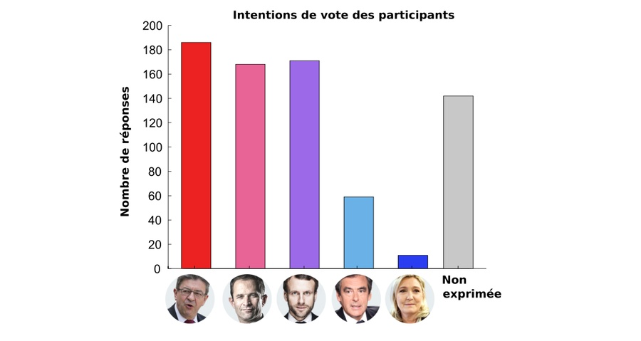
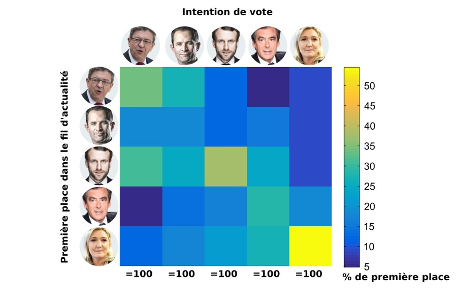
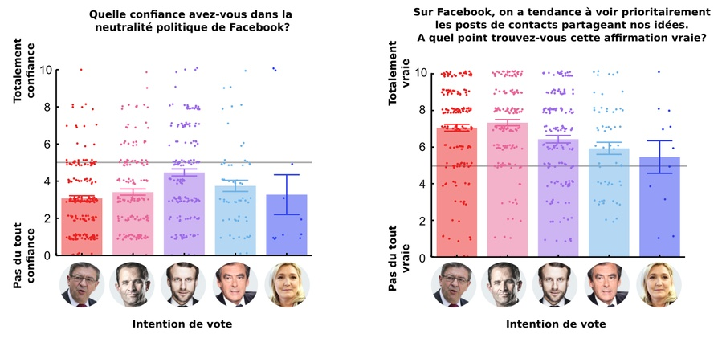

With over 30 million registered users in France, the web giant has become an indispensable tool for politicians, activists, and journalists shaping our democracy. The information circulated there significantly influences the evolution (or stagnation) of our political opinions and our perception of the voting intentions of our social circle.
Since 2013, the platform’s initial algorithm, known as Edge Rank, has been replaced by several much more complex artificial intelligence algorithms: at its introduction, a Facebook engineer estimated that about 100,000 factors were taken into account to determine which content would be shown to a given user. As I already wrote in November 2015 after the Paris attacks, there are no reasons other than conspiracy theories to think that Facebook uses its incredible power of influence to knowingly sway the evolution of contemporary societies.
However, there are also very few means for citizens and public institutions to exclude such a hypothesis, since the content referencing procedure employed by Facebook is not made public, only a minority of shared content is accessible beyond “friend circles” (unlike Twitter, for example), and it is impossible to display these contents in a truly chronological order, which would facilitate the examination of its operation and any potential representation biases among users.
What will be the impact of this “intelligent” filtering on the 2017 presidential elections? No one can say for certain, but this should not prevent us from asking the question.
Experimenting on Facebook or the Reign of System-D
Thus, only the goodwill of citizens willing to coordinate to conduct experiments on the social network allows for the study and monitoring of how the company controls the transmission of information shared there. It is precisely the results of such an initiative that I report here (Figure 1).
In order to see whether Facebook favors certain presidential candidates and to what extent the “filter bubble” effect that locks us into our own political preferences is real, I asked 30 Facebook users to successively post five messages of support for the 5 main presidential candidates: Jean-Luc Mélenchon (JLM), Benoît Hamon (BH), Emmanuel Macron (EM), François Fillon (FF), and Marine Le Pen (MLP). All the messages were formatted as follows:
That’s it, I’ve decided. In the presidential elections, I will vote for XXXXX!
This is an experiment, not spam. To participate (1 to 5 min) click here: https://goo.gl/forms/uGy3dRtxu11xKwSe2
Please: do not like / do not share / do not comment on this post
https://www.xxxxx2017.fr/
The letters XXXXX were replaced in each of the 5 messages by the name of each candidate (example: François Fillon and www.fillon2017.fr). A specific order of publication was assigned in advance so that the messages of support for each candidate were published equally often (6 times) in 1st, 2nd, 3rd, 4th, and 5th position across the 30 accounts used for the experiment. The contacts of each experimenter agreeing to fill out the Google questionnaire (see here) were then asked to report several pieces of information:
1°) which candidate appears first in your Facebook feed?
2°) which candidate do you plan to vote for?
3°) which candidate do you think your contacts will mostly vote for?
4°) have you ever relayed negative information against certain candidates?
5°) do you think Facebook is politically neutral?
6°) do you agree that on Facebook, we primarily see content that we like?
7°) in what order do the 5 candidates appear on your Facebook news feed?
NB: questions 2-7 were optional.

Over a one-month period (from February 28 to March 26), 737 responses were collected on the social network. Although the results of this study provide unique and sometimes unexpected insights, they must be approached with some caution for several reasons: the tested sample is not representative of the French population (overrepresentation of young, educated, left-leaning participants) and certain factors were not strictly controlled (spontaneous reactions to posts, number of responses per participant, number of responses per account, etc.). Moreover, this is not a scientific study in the strict sense: its methodology has not been evaluated by any research committee and the author of the study (namely, me) is not a specialist in social network analysis.
Nevertheless, it is worth noting that polling institutes are also far from meeting standard scientific criteria and they almost never release the raw data collected, hence the proliferation of criticisms against them. On the contrary, the methodology of this study, the raw data, and the scripts used for analysis are fully available online (here), which should notably allow for the replication and refinement of the experiment, or to verify the reported conclusions. These findings prompt reflection on the role played by Facebook in presidential elections and show the usefulness (even necessity) of studying the social network to better account for (and possibly limit) its impact on the democratic process in France.

As long as Facebook refuses to allow its users and public authorities to audit its algorithms and its use of personal information, this approach will remain necessary.
Filter Bubbles in the Context of French Presidential Elections
Discussed and theorized for several years, particularly under the impulse of Eli Pariser, the problem of filter bubbles is related to the fact that the social network constantly personalizes our experience to show us content with which we are already in agreement or about which we have a prior interest. In an interview granted to Time, Eli Pariser indicated that on Facebook, “you indoctrinate yourself with your own opinions. You don’t realize that what you’re seeing is just a part of the picture. And this has consequences for democracy: to be a good citizen, you need to be able to put yourself in the shoes of others and have an overview. If everything you see is rooted in your own identity, it becomes difficult, if not impossible.”
The phenomenon must be distinguished from sociological confinement which stems from the fact (also very important) that we select our Facebook contacts based on pre-existing affinities, who in turn select their contacts in this way. For example, in this study, the very low number of participants declaring their intention to vote for François Fillon (10% of the expressed intentions) or Marine Le Pen (2% of the expressed intentions) undoubtedly reflects my own sociocultural confinement and the “social distance” that typically separates me from these voters (Figure 2). However, while most of us are aware of our sociological confinement, the filter bubbles generated by Facebook’s algorithms have a more pernicious influence, as they result from implicit (and largely unknown) control over the content we are exposed to.
In the data collected here, Facebook, for example, modified the real order of messages posted in 92% of cases, which “allowed” more than 30% (182) of the 595 individuals who expressed their voting intention to see their preferred candidate appear first in their news feed. Statistically, such a proportion is almost impossible to occur by chance, indicating that Facebook is indeed able to predict, to some extent, for which candidate we will vote, and that it uses this information to choose the content to which we are exposed.

If we break down the analysis candidate by candidate (Figure 3), we observe that the effect is particularly true for Marine Le Pen (displayed first on the news feed of 54.5% of her potential voters), for Emmanuel Macron (first on the news feed of 38% of his potential voters) and, to a lesser extent, for Jean-Luc Mélenchon (34.4%) and François Fillon (28.8%). Only Benoît Hamon achieves a result opposite to the general trend, since only 17.8% of his potential voters saw him first in their news feed: the figure above indicates that Hamon’s voters actually tend to see positions in favor of Mélenchon or Macron first, which may seem logical given the delay taken by his campaign compared to these two candidates.
“Filter Bubbles” and Useful Voting
Thus, the existence of filter bubbles implies that we tend to see positions and content that reinforce us in our convictions. They therefore have a particularly problematic consequence in the specific context of French presidential elections: they probably reinforce the well-oiled mechanism of “useful voting” so often criticized. Indeed, useful voting is essentially a strategic vote consisting of voting for the candidate whom we believe has the most chances of winning against a given opponent. It therefore largely depends on a bet on the voting intentions of the social group as a whole.
Everyone knows that Emmanuel Macron represents the “useful vote” candidate today. Therefore, if the people who plan to vote for him are primarily exposed to positions favorable to this candidate on Facebook - to the detriment of statements (or shared content) in favor of other candidates - it is clear that this can only reinforce them in their strategy. To see if the phenomenon of filter bubbles could influence the perception of voting intentions within the social group, I crossed personal voting intentions (question 2) with the estimation of the majority vote within the social group (question 3). The results of this analysis, reported in Figure 4 below, are particularly striking:
- Potential voters of Mélenchon or Hamon generally consider that their entourage will vote mostly for Mélenchon (47% and 28%, respectively), for Hamon (25% and 37%) or for Macron (26% and 33%).
- Potential voters of Fillon generally consider that their entourage will vote mostly for Fillon (52%) or for Macron (41%).
- Potential voters of Le Pen generally consider that their entourage will vote mostly for Le Pen (36%), Fillon (27%) or Macron (36%)
- Finally, potential voters of Macron consider that their entourage will vote for Macron in 65% of cases, a record in this regard. Fillon is, among these voters, the second candidate considered most often majority within the social group, but this happens only in 13% of cases!

Two hypotheses are possible to explain this last observation: either the potential voters of Emmanuel Macron correctly assess the majority vote of their social group, or they suffer from a distortion that leads them to imagine Macron more majority than he really is. The data collected cannot definitively decide, even if the distribution of collected voting intentions (see Figure 2) suggests that the different social groups tested are not so favorable to Emmanuel Macron, and therefore that the second hypothesis has a chance of being valid. However, if the first hypothesis were valid, it would mean that potential voters of Macron are locked in a somewhat more hermetic sociocultural bubble than the others, which is not necessarily reassuring either… That being said, it must be said that the lack of data available for Marine Le Pen makes comparison with this candidate uncertain and that the overall results of the analysis could vary if the experiment were replicated in another social environment.
Finally, if it is important to emphasize the fact that potential voters of Emmanuel Macron suffer from a more intense filter-bubble effect than other voters, it is also because this result contrasts with their assessment of the social network. Thus, they paradoxically seem less in agreement (6.4) than the voters of Hamon (7.3) or Mélenchon (7.1) to say that “On Facebook, we tend to see primarily the posts of contacts sharing our ideas” (from 1, not at all, to 10 completely agree; Figure 5, right). Similarly, to the question “Do you trust the political neutrality of Facebook?” (from 1, not at all, to 10, completely trust), they obtain an average score of 4.5; the difference with the potential voters of Hamon (3.4) or Mélenchon (3.1) being statistically significant (Figure 5, left).

Sensitive Issue and Slippery Slope: Does Facebook Favor Certain Candidates?
Technically, the data collected during this experiment also allow us to determine whether Facebook favors certain candidates over others. To avoid some exploiting the data posted online by taking it out of context, I report below a few analyses suggesting that Emmanuel Macron might be favored by the algorithms of the social network, which perhaps explains why the phenomenon of “filter bubbles” described above appears more marked for this candidate. But, it is good to take into account this advantage (especially when one belongs to a social environment similar to that of the present study), I must immediately caution the reader against any conspiracy theory interpretation that would consist of thinking that these analyses reveal a deliberate manipulation by Mark Zuckerberg! I explain why a little further down.
The first clue suggesting that Emmanuel Macron is favored compared to other candidates comes from the comparison between the proportion of participants who saw each candidate in the first position in their news feed and the proportion of participants who should have seen this candidate first if the chronological order were respected. Indeed, Emmanuel Macron is the candidate for whom this difference is the most favorable, whether one uses all the available data (+9%, against +5% for Mélenchon and -11% for Fillon) or systematically excludes from the analysis the responses where he was the favorite candidate of the participant considered (+5% against +2% for Le Pen and -12% for Fillon).
Then, if we examine the probability that each candidate is presented first in the news feed, knowing that he was actually first (according to the chronological order; Figure 6, left), or the same probability, knowing that he should have been last (still according to the chronological order; Figure 6, right), we again notice a fairly clear advantage in favor of Emmanuel Macron:
- When he is actually first according to the chronological order of publication, Macron is indeed seen first in the news feed in 45% of cases. By comparison, Le Pen (second on this scale) is actually first only in 30% of cases where she should be first and this proportion drops to 15% for JLM (last on this scale).
- When he should have been last (according to the chronological order), Macron still appears first in 53% of cases. By comparison, Le Pen (again second on this scale) appears first in 40% of cases where she should be last and this proportion drops to 4% for Fillon (last on this scale).
Looking more closely at the graphs that synthesize these data, we notice two other interesting trends. Firstly, Marine Le Pen often substitutes for Jean-Luc Mélenchon when he should appear first (33% of cases) - and vice versa (in 31% of cases). Secondly, Jean-Luc Mélenchon often substitutes for Benoît Hamon when the latter should appear first (37% of cases). These substitutions likely correspond to the association of these different candidates in press articles relayed on the social network, since we know that many journalists like to bring together Jean-Luc Mélenchon and Marine Le Pen on the one hand, and that the question of the rapprochement between Hamon and Mélenchon has occupied a lot of media space in recent months on the other hand.
The third and last clue allowing to highlight the favorable referencing of Emmanuel Macron comes from the analysis of a subset of the data, focused on the situation where the candidates considered are initially positioned in the 3rd position (i.e., central) in the chronological order of publication (Figure 7 below). By allowing the simultaneous visualization of upward and downward trends based on a well-defined situation, this analysis shows that Macron is raised in 50% of cases to the first or second place (against 32% for Hamon, second, and 21% for Le Pen, last), and in 41% of cases to the first place (against 10% for Fillon, second and 4% for Le Pen, last). With Hamon (65%), Emmanuel Macron (64%) is thus the candidate who has the highest chance of maintaining or moving up in the referencing of Facebook when starting from a chronologically intermediate position.
As I wrote above, we should not infer from these data that Emmanuel Macron is intentionally favored by the company, nor that the results obtained would be replicable in any social environment. It is for example possible that Emmanuel Macron is favored simply because he appears more often in the media or because he generally elicits fewer negative comments than more polarized candidates - whether on the left or the right. Even though we cannot strictly exclude this hypothesis, it therefore remains highly improbable that Facebook intentionally favors one candidate over others: it is more likely a “phenomenon emerging” linked to the functioning of the referencing algorithms.
Certainly, academic research on Facebook exists and allows for fascinating results from a sociological point of view. Some are even sponsored by the company itself like this study conducted on 11 million Americans published in the journal Science in 2015 (which was obviously reassuring about the phenomenon of filter bubbles). However, the control over the diffusion of content exercised by the company has recently intensified with the debate on “fake news” and the slowness of academic research is in any case little compatible with political or media timelines. While waiting for Facebook to offer more guarantees regarding its functioning (intentional or accidental) and given the precedent represented by its successful attempt at “emotional control” - published in 2013 in the journal PNAS, the creation of a citizen observatory that would conduct on a larger scale experiments similar to the one described here would therefore be very useful.
How Does Facebook Know Who You Will Vote For?
Much has been written about how Facebook processes our personal information to better predict our preferences (political or otherwise) and expose us to content that generates revenue. During this experiment, I noticed that some people thought they were immune to Facebook’s political classifications because they do not share and do not react to the content that is distributed there. Therefore, for these people, the idea that a filter bubble could nevertheless bias their perception of political news often seems absurd.
However, a number of factors such as age, gender, the composition of the circle of contacts, the content viewed, or the type of pages followed allow Facebook to profile these users more as spectators than actors. Moreover, its algorithms can also rely on indirect information: in the data described here, it appears for example that the use of Facebook during the day differs significantly depending on the left-right divide (Figure 8): compared to users on the left, right-wing users show a more marked peak of activity between 5 pm and 9 pm, so that the simple distribution of our activity on Facebook already says something about our political orientation. By the way, and to conclude, this kind of information also allows Facebook and the companies that exploit its data to have a fairly precise idea of our circadian rhythm (or “biological clock”), which opens a door to our lifestyle…

Going Further
- The Data Selfie extension for Chrome allows you to visualize in real-time the data that Facebook collects about us.
- The mechanism of referencing on Facebook is evolving rapidly at the moment, notably under the impetus of the artificial intelligence department of Facebook led by the Frenchman Yann LeCun (a researcher at the origin of the so-called “deep-learning” revolution) who would even, eventually, like each user’s experience to be controlled by a dedicated artificial intelligence. Thus, the excellent courses given by Yann LeCun last year at the Collège de France (available online here) give a very good idea of the stakes of artificial intelligence and the type of algorithms used by Facebook today.
- The wonderful tool Politoscope put online this Monday, April 3, by researchers from the Institut des Systèmes Complexes de Paris-Ile-de-France allows us to visualize with a very high degree of precision different social dynamics related to the presidential campaign on Twitter.
- Entitled “Should We Burn Facebook?”, the interview given to Mediapart by Antonio Casilli, researcher and lecturer at Telecom ParisTech links the business model of Facebook and the principle of filter bubbles and shows the importance of the question for democratic societies.
- As fascinating as it is terrifying, the interactive documentary Do-Not-Track dissects the mechanics of individual profiling on the internet (which extends to our personalities, our addictions, our anxieties, our bank accounts, etc.) and shows that the data extracted from social networks are increasingly used by private companies (for example, insurance companies) and by public authorities (for example, to profile immigrants or to anticipate or counter social protest movements).
- Finally, not everyone shares the idea that filter bubbles are so detrimental to the democratic debate: see for example the reflection of André Gunther the day after the election of Donald Trump or this recent study suggesting that filter bubbles contribute less than one might think to polarizing the political space (which is, however, not the argument of the present post).
Thank you to all the experimental assistants and participants who made this study possible!